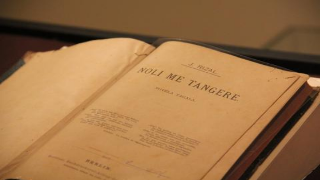
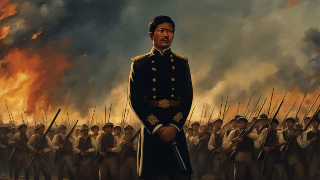
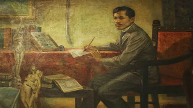
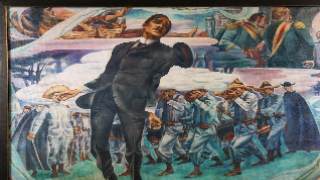

About Rizal
José Rizal, the national hero of the Philippines, was a multifaceted figure whose life and works continue to inspire generations. Learn about his remarkable journey and enduring impact on Philippine history and culture.
Achievements
Jose Rizal, a national hero of the Philippines, achieved remarkable feats in various fields. Here are some of his notable achievements.
-

Literary Masterpieces
Rizal was a prolific writer and poet. His two most famous novels, "Noli Me Tangere" and "El Filibusterismo," exposed the injustices and abuses of Spanish colonial rule in the Philippines. These works sparked a revolution and inspired national consciousness.
-

Political Activism
Rizal was a prominent advocate for reforms in the Spanish colonial government and the clergy. He used his writings to criticize the corrupt practices of the Spanish authorities and to call for social and political change.
-

Education and Medicine
Rizal studied in Europe and obtained degrees in medicine and philosophy. He was a skilled ophthalmologist and a respected intellectual.
-
Nationalism and Patriotism
Rizal's writings and actions inspired a sense of nationalism and patriotism among Filipinos. He believed in the importance of education and enlightenment for the progress of the country.
-

Martyrdom
Rizal's execution on December 30, 1896, by the Spanish authorities further fueled the flames of revolution. His death became a symbol of Filipino resistance against colonial oppression.
-
Legacy
Rizal's legacy as a national hero and martyr continues to inspire generations of Filipinos. His writings and ideals are taught in schools and are a reminder of the importance of fighting for freedom, justice, and equality.